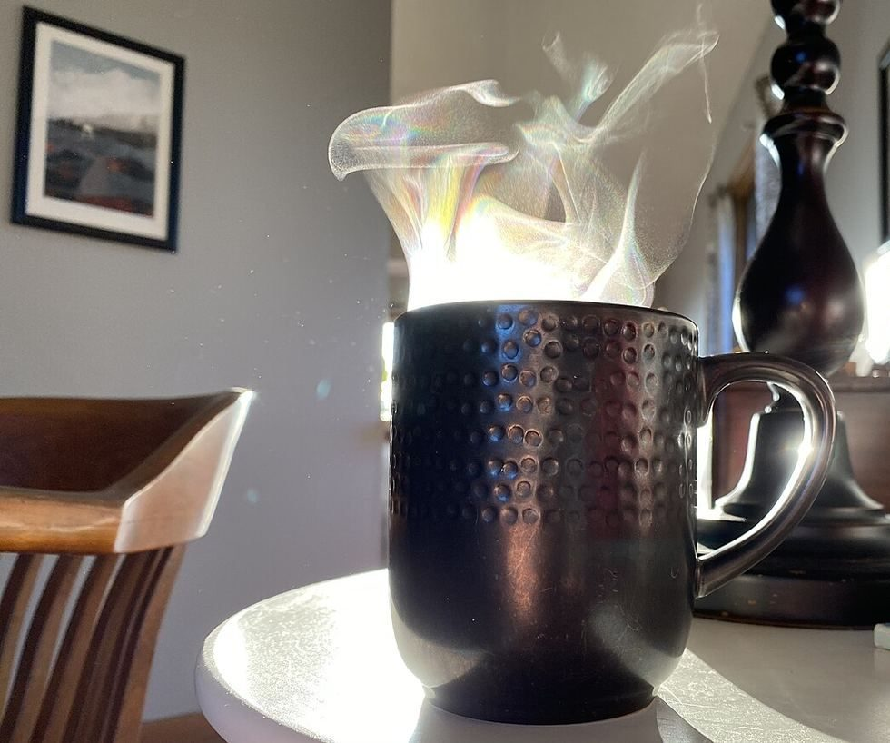

ABOUT
お店のこと
確認できているのは所在地とInstagramのみ。そのほかは準備中です。





写真はコーヒーとパンのイメージです。お店のものではありません。
THIS SITE
このサイトの図について
このテーマは制作側の連想で、お店の理念・由来とは無関係です。実際の製品の仕様を示すものでもありません。 このサイトでは、ハエたたきを6つの部位に分けて並べています。
1
持ち手
手で握る部位。すべりにくいよう、細かな溝を入れた形で描いています。
2
吊り穴
持ち手の端にあく小さな穴。フックにかけて保管するときに使う部位です。
3
柄
持ち手と打面をつなぐ、細い棒状の部位です。
4
つなぎ部
柄と、打面を囲む枠とが出会う継ぎ目の部位です。
5
打面(メッシュ)
網目状の平らな面。細かな穴が整列して並んでいます。
6
縁(フレーム)
打面をぐるりと囲む枠。面の形を保つ役目があります。
INFO
基本情報
| 屋号 | Rhino and the Bread サイとパン |
|---|---|
| 所在地 | 〒516-0014 三重県伊勢市楠部町203-18 |
| 電話 | 準備中 |
| 営業時間 | 準備中 |
| SNS | Instagram @rhinoandthebread |